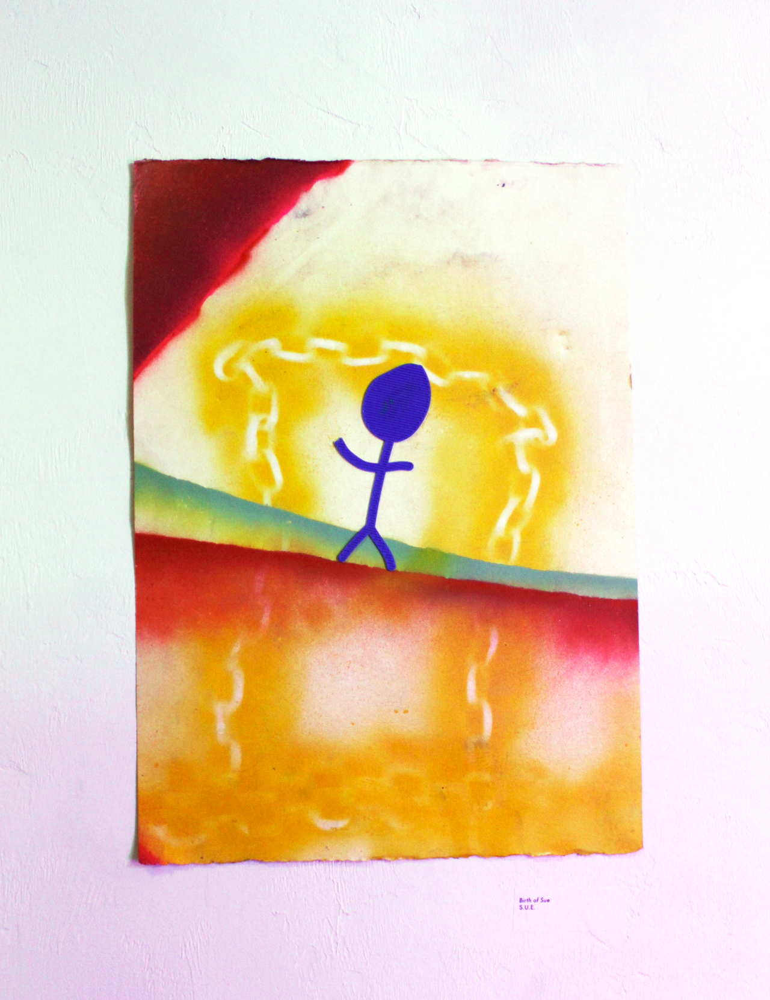
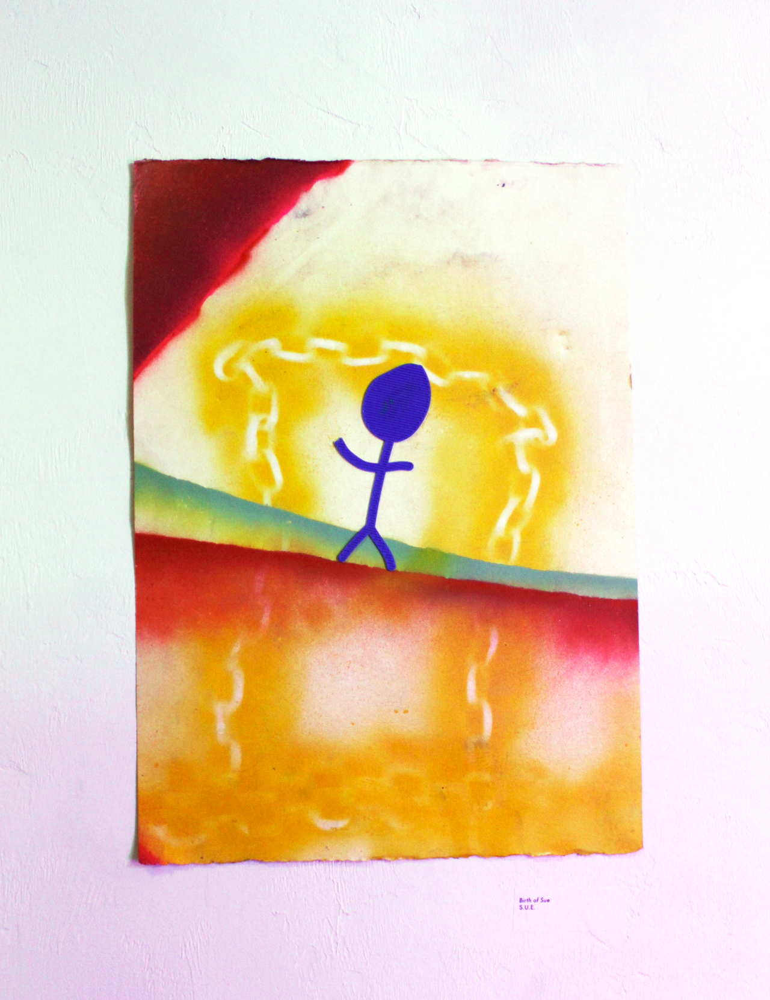
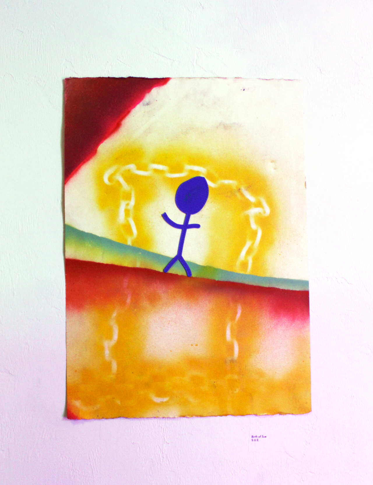

3 person exhibition
Ashley Browne, Brianna Piedra, John Feeshy Walker
April 2019, 4Most Gallery
Architecture as a simulation. Pre-sim reality being a pre-infrastructure world. In thinking that a simulation is a new space/reality created within a pre-existing space, architecture creates pocket simulations. Carrying off this idea, considering each shift in the function of the building as a different version of the simulation.
M.B.S.V.4. references the simulation history of the 4Most Gallery building. The acronym stands for Milk, Bike, Sue, and Version 4 and references the previous 'simulations' of the architecture. The origins of the building beginning with a dairy company, then a bicycle shop, then the 4Most gallery which was currently run by Sue Montoya. The exhibition is displayed as a purgatory state of a museum of the history of the previous simulations yet is rotted in the current S.U.E. version. The simulation is falling apart on itself however, seemingly cracking as it prepares to undergo another evolution into the next simulation - V4.
